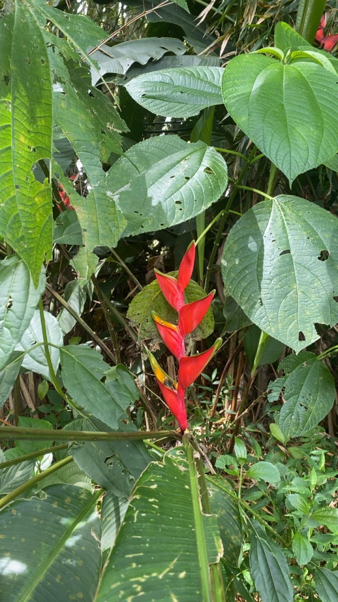
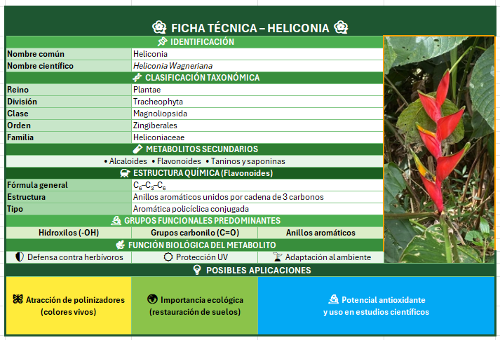

Nombre Común: Heliconia
Nombre Científico: Heliconia Wagneriana
Familia Botánica: Heliconiaceae
Ubicación en el sendero: alrededores del camino principal

La Heliconia wagneriana, conocida comúnmente como heliconia, es una planta tropical perenne de la familia Heliconiaceae que puede alcanzar hasta 2,5 metros de altura y se caracteriza por sus grandes hojas alargadas y sus llamativas brácteas rojas o anaranjadas en forma de barco, que incluso pueden almacenar agua, favoreciendo su adaptación en ambientes húmedos. Desde el punto de vista químico, esta especie produce metabolitos secundarios como alcaloides, flavonoides, taninos y saponinas, los cuales presentan estructuras con sistemas aromáticos conjugados y grupos funcionales como hidroxilos (-OH) y carbonilos (C=O), que les permiten desempeñar funciones específicas dentro de la planta. Gracias a estas características, los alcaloides actúan como defensa química frente a herbívoros, los flavonoides cumplen funciones antioxidantes y de protección frente a la radiación UV, mientras que los taninos y saponinas contribuyen a la protección general y a la toxicidad leve que disuade a los depredadores, favoreciendo así su adaptación y supervivencia en el entorno.
